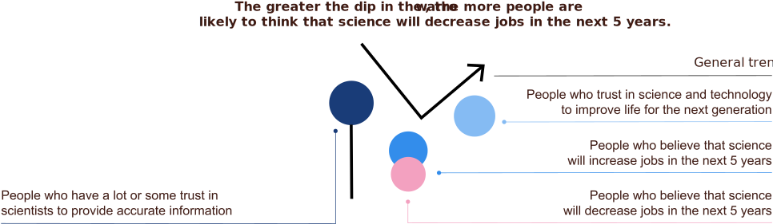

How likely are people to think that science can help create a better future?
The Lens of Future Economies
Understanding the desirability of a world shaped by science and technology for India and Bangladesh.
As economies undergo a transition from production of goods to provision of services they start to relate more to the benefits of science and trusting scientists to provide accurate information — while becoming more skeptical about science’s ability to increase jobs. When looking further ahead into the future, low income countries stand out as having the least faith in science’s ability to improve life for the next generation.
Present Day
Low income countries are less trusting of scientists to provide accurate information and are less likely to relate to the experiencing the benefits of science (see benefits lens).
Low Income
Lower Middle Income
Upper Middle Income
High Income
In 5 years
Low income countries are very positive about the potential of science and technology to increase jobs. Significantly more so, than high income countries.
Low Income
Lower Middle Income
Upper Middle Income
High Income
The higher the country’s Human Development Index (HDI), the more likely the country is to say that science will decrease jobs. And less likely the country will be to say that science will increase jobs. HDI is a summary measure of average achievement in three key dimensions of human development: a long and healthy life, being knowledgeable and having a decent standard of living.
Looking at countries at very different stages of development using share of employment by economic sector as a proxy, we find:
Countries which have a strong agricultural sector, are more likely to think that science will increase jobs and also much less likely to think that science will decrease jobs.
Countries which have a strong industrial or service sector, are more likely to think that science will decrease jobs and moderately less likely to say that science will increase jobs.
IMPLICATION
As economies undergo a transition from production of goods to provision of services they start to relate more to the benefits of science, trust scientists more to provide accurate information - and are also more skeptical about science’s ability to increase jobs.
CASE STUDY
INDIA
India is representative of an economy which is currently undergoing this transition — In 2019, 42.39 percent of the workforce in India were employed in agriculture, while the other half was almost evenly distributed among the two other sectors, industry and services.
Indians who are full time employed are just as likely to believe science & technology will increase jobs than those who are not.
Those people who had a negative experience on the day before the survey were 1.5 times more likely to say science and technology will decrease jobs and not improve life for the next generation.
Given Wellcome’s focus on improving mental health at the workplace — we were interested in learning more:
Mental health is an issue for India’s traditional, informal and modern workplaces.
Close to 81% of all employed persons in India make a living by working in the informal sector, with only 6.5% in the formal sector.2 Despite being the majority sector, there is a lack of research documenting the prevalence of mental health disorders in the unorganised sector — in the absence of broader proxies, we have used the extreme statistic of occupation-related suicides to highlight contextual challenges.3
CONTEXTUAL CHALLENGE
A tradition in transition impacts women’s mental health
Entrenched patriarchal social norms hinder women’s agency, mobility and freedom to work in India. Indian women spend on average of 5.8 hours on unpaid work at home everyday against 52 minutes for men 4. These “nonworking” women have 1.2 times higher anxiety 1.3 times higher stress than “working” women 5. They represent the second highest suicide risk (according to profession) - believed to be a reflection of the conflicted roles in which Indian women find themselves as society undergoes social change6.
CONTEXTUAL CHALLENGE
Everyday uncertainty for daily wage earners
450 million
Of the 450 million people7 employed in the informal sector, millions work as dailywage earners. These ‘naka’ workers — Painters, masons, plumbers and labourers — gather at street corners every morning, waiting to be picked up by a contractor in return for a small wage. As a profession - they are at highest risk for suicide in India8 — and face challenges regarding safety, sense of belonging, group membership, control over one’s life, competence, closeness with peers and nurturing adults9.
CONTEXTUAL CHALLENGE
A pressurised workplace for modern workers
12 MILLION PEOPLE
Private sector companies symbolize the modern indian workplace and employ around 12 million Indians10. They are highly stressed environments with demanding schedules — In 2015, 42.5% of employees in private sectors self-reported as being affected by depression or general anxiety disorder11.
Opportunity
How might science ensure that its findings are translated into delivery mechanisms suitable for everyday life of all sections of society?
CASE STUDY
BANGLADESH
Bangladeshi’s are extremely positive about the impact science & technology can have in increasing jobs. According to the Gallup World Poll, people in Bangladesh who say their local economy is getting better rose from 55% in 2008 to 79% in 2018. Despite this positivity, Bangladesh is expected to be one of the worst hit countries from climate change - expecting to lose 4.84% of the total working hours due to heat stress resulting from global warming in 2030.
Across the world, countries generally trust science and technology to improve life for the next generation. However, low income countries are less trusting than middle income, upper middle income or high income countries to improve life for the next generation
Key Takeway
The discussion of economic dislocation caused by scientific and technological breakthroughs has led to a relatively broad-based sense of anxiety about possible negative consequences on local job markets in high income countries. To ensure that this same anxiety is not felt by agricultural economies as they get industrialized and networked in the coming years, it is important to consider & codesign a desirable future with citizens and not for them.
Opportunity
How might science facilitate conversations about the kind of future people would like to have — and work collectively towards realizing that vision?
The Lens Of Future Economies
Where might people turn when there is a difference of opinion between religion and science?
Religion and traditions co-exist across the world. In case of disagreement between the two belief systems — people switch sides — plunging the cultural authority of science.
Use this lens to help estimate the probability of a “plunge” in the authority of science, which could take place in a country when people are faced with factors such as unfamiliar science, controversies or epidemics.
